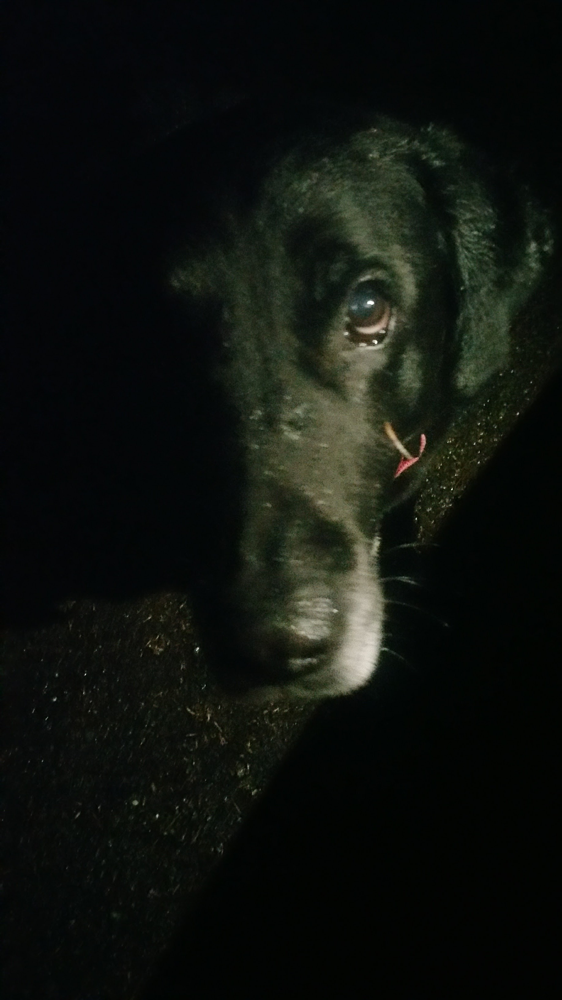
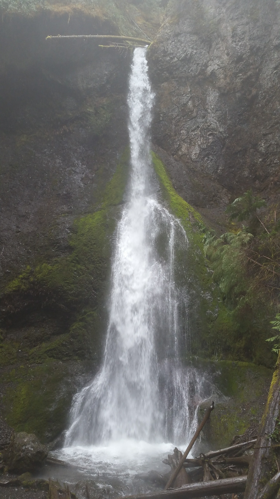
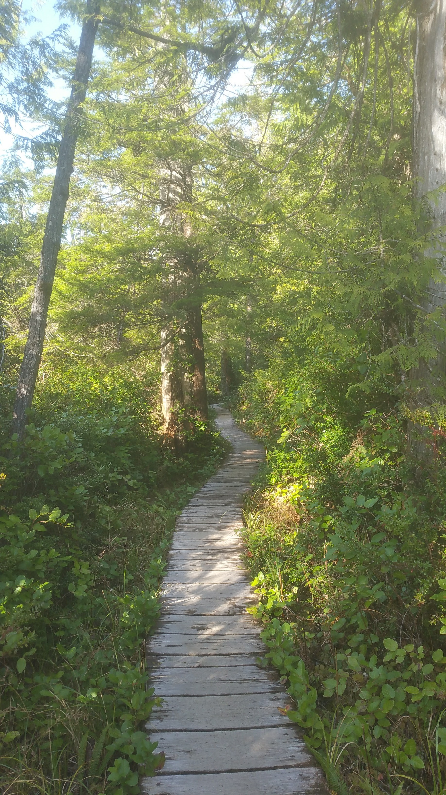
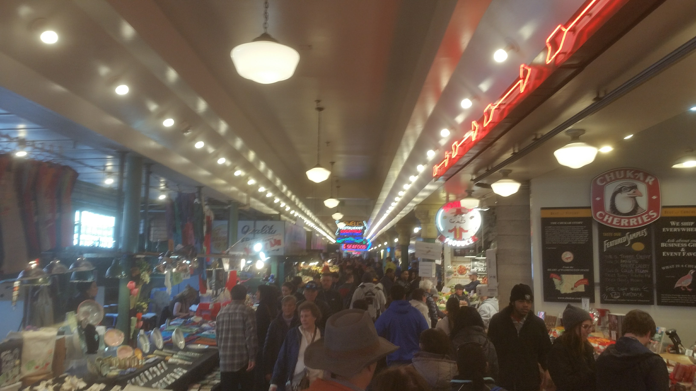
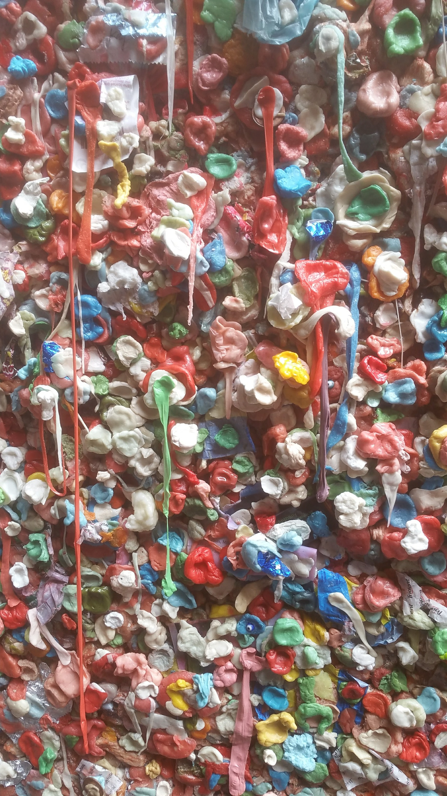
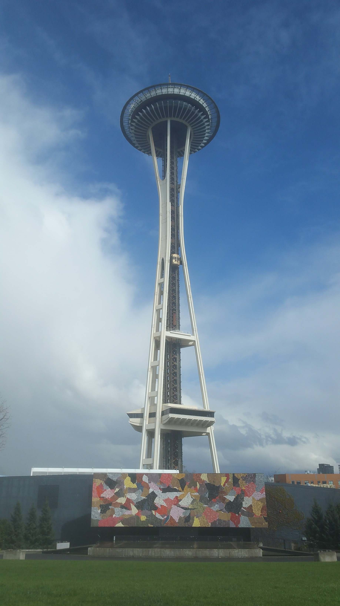

VISIT THE NORTHWEST!
Seriously! DO IT. This place is so incredible, so beautiful, so serene, so rainy but SO PRETTY. Now I want to move here pretty bad, if you couldn't guess. The younger culture is very reminiscent of my favorite parts about Western Mass; the older culture is a little bit more... milquetoast, but what can you do?? Also, milquetoast is my word of the week. I love it.
The night after my last post we camped in a state campground. It was super rainy, but we had our kitchen all setup and dry. We were visited by a very hungry (and adorable) friend, who stayed with us until we were packing up for bed..
Meet River!!
Marymere Falls (and particularly Crescent Lake) were lovely. The hike into Marymere is very manageable from the Thunder King Lodge, under 2 miles round trip with very little elevation change. The rain was pretty persistent the day we went out there, so we held off on hiking to the peak of the Thunder King.

Snapped this beauty, though
Marymere Falls
Lacey forgot her rain coat in Port Angeles (not nearly behind as far as my sweatshirt was in Rockland!), so we headed back there... we also ended up buying some more legal weed, which had us feeling lazy on the rainy gray day. So we headed up the Sol Duc River (in Olympic) to the hot springs and relaxed for the afternoon. The springs were pretty sulfurous, and quite improved (they were within a spa, by a pool, and concrete-lined), but very hot and super relaxing in the rain. There were a ton of Russian (Estonian? Belarusian?) tourists there, they made up over 75% of the spa guests, but we chatted with some English-speaking folk and had a nice afternoon. Very nearby are the far-less-improved Olympic Hot Springs, higher in the mountains. Unfortunately, the trailhead to hike up to those was inaccessible by car, and the roundtrip hike over 20 miles... no thanks.
That evening we slept in a campsite near the park, next door to the Hungry Bear Cafe. Me being an avid lover of bears and all bearkind, we got a very tasty breakfast there the next morning and chatted with the elderly owner-couple. They topped off our water, and we struck north for the small area on the peninsula known as Ozette. There was a lovely 9-mile coastal loop trail there we took, traveling through coastal rain forest for 2/3 of the journey, but spending the middle 1/3 hiking the beach! There were some large, grassy boulders rising up in various parts of the beach, which we elected to climb.
The trail to the coast

One of the many wooded islands just off the coast
We camped that evening in the Hoh Rain Forest again, which had become one of our favorite campsites of the trip. The next morning, soaked to the bone and out of clean clothes, we fled the rain forest in search of dryer climes. A few hours later we found ourselves in the city of Lacey (hehe), just outside Olympia. We showered, laundered, and met up with my friends Ben (different one) and Kaley! We hung with them for a couple days, Ben was kind enough to treat us to meals (including tasty omelettes the morning before we left) and Kaley to provide coloring books and supplies. It was a much needed, much appreciated time in the dry, cozy indoors. We also got to tour some of the expansive property they were living on. Olympia was a lot more... rural than I expected. Thanks again, Ben and Kaley!!
The day after that I spent some time jamming beats and refactoring my current codebase for Folk Heroes. Real exciting, outdoor-adventure type stuff. Lacey had enough of hanging around after that day, and we headed for Seattle! First stop: Pike Place.
 The infamous "Gum Wall"
We wandered all over the labyrinth of cute shops, bakeries, and fresh food; explored the waterfront and even saw sea lions swimming off the pier; grabbed drinks at Local Color, a cafe I remembered visiting my last time in Seattle, 8 years ago (crazy!!) I wanted to sleep in the woods for a change of pace (we had elected to Walmart lots for a couple nights since Olympic), and we drove out towards Snoqualmie Pass. The Sno was still pretty packed up there, and a decent amount of campsites were closed, but we made do. The next day we went back into Seattle to grab tasty piroshky's at Piroshky, Piroshky Bakery. Piroshky's (piroshkies?) are delicious Russian baked items that have meats, cheeses, herbs, and spices in them. Basically a hand-held, super tasty meat-and-cheese pie. We got 3 to split and would've probably gotten 100 more if not for the perpetual line out front of that incredible bakery.

Delicious beef and cheese piroshky's, in the works
It doesn't actually go to space...
After that we explored Seattle Center, the area surrounding the Space Needle. Then we met up with our friend Jon at his office downtown! Jon works at a super-awesome start-up called Nullspace VR. They're working on a haptic-feedback suit for VR experiences. It allows the user to feel the experience of VR as well as see and interact with it. He let us play some VR games with their equipment. It was both Lacey and I's first time doing anything VR (she's not a big fan of it as a concept, haha), it was hysterical, weird, and a lot of fun.
Afterwards, he so kindly treated us to delicious ramen at a spot in Bellevue (a city just outside of Seattle), and let us shower at his place while we hung out. He showed us some more games and gave me a lot of ideas and inspiration for my current project. Thanks so much, Jon!
Today, we're hanging up in Burlington area (north of Seattle). I'm having my new license (mine expires in 5 days, on my 26th birthday!) shipped General Delivery to the Post Office here, so we're killing some time until then. We may check out the nearby Baker Hot Springs (I wanted to see the fumeroles, but apparently you need to be an "experienced ice-climber" to reach them. Lame!!), or some of the famous vistas looking towards the (currently inaccessible) North Cascades National Park.
Then, Canada redux! Very excited. Thanks for reading, stay tuned for more!
Oh, also: please check a beat I made this week! I called it "pine tree swagger" cause of all these beautiful Northwestern pines, and cause of the beat's swingy-swag. Vibes. (Soundcloud)
Mileage: 16700
Weather: Gray, windy, 55F
Currently listening to: Daft Punk - Discovery